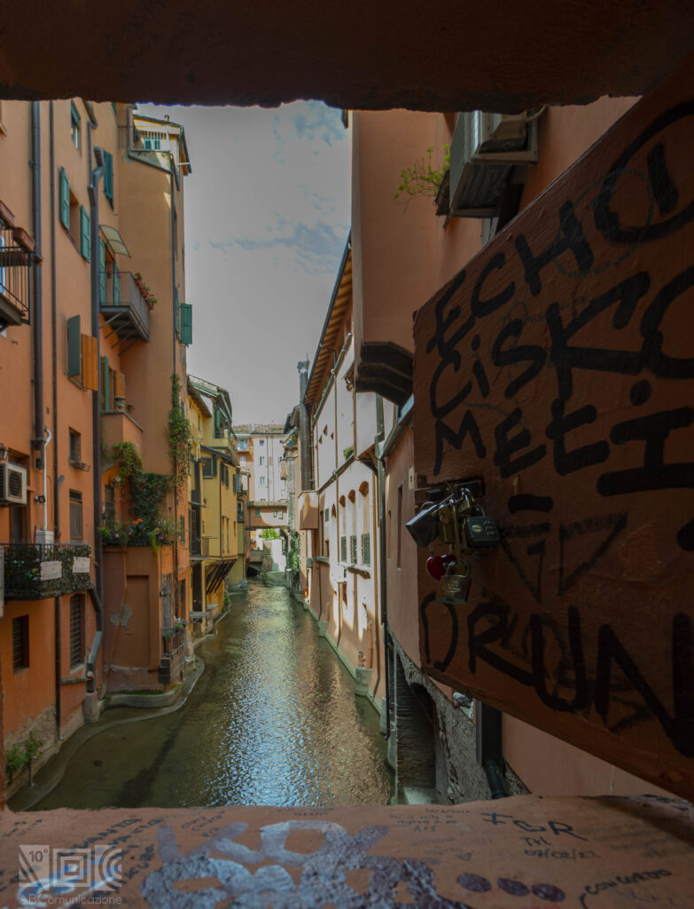
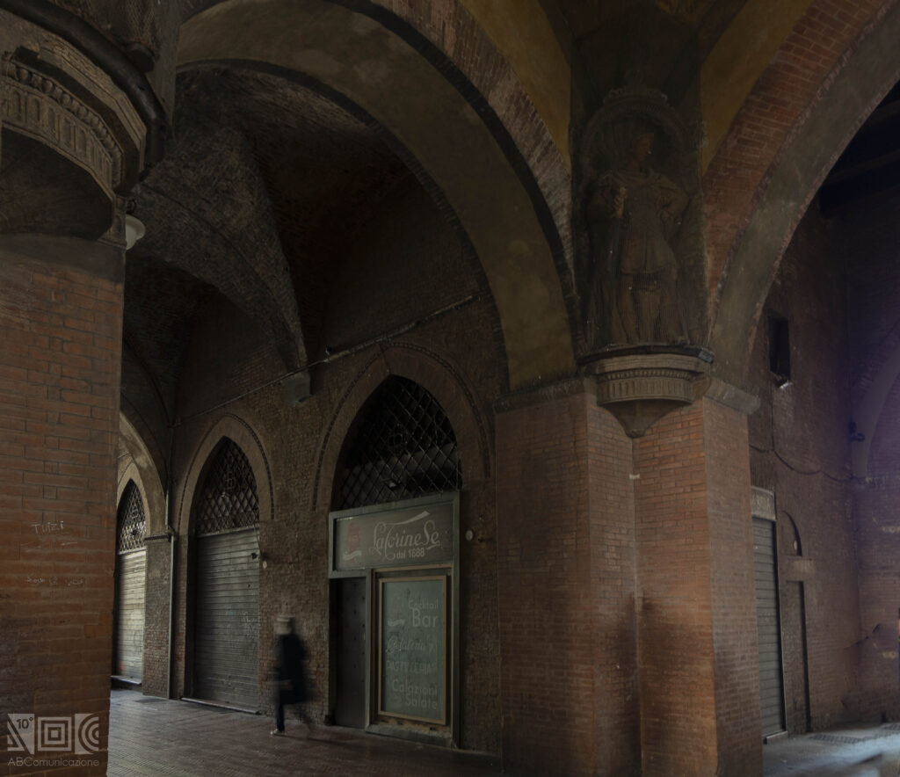
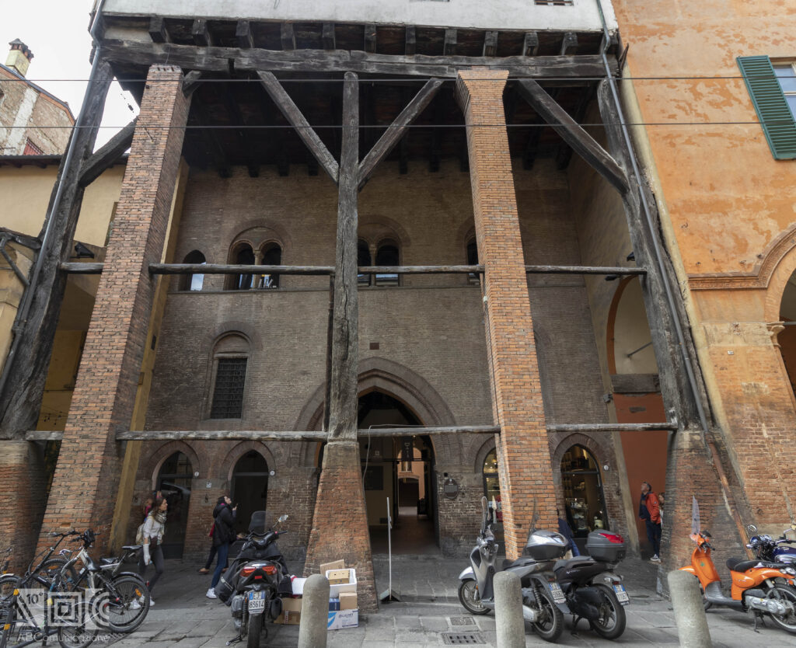
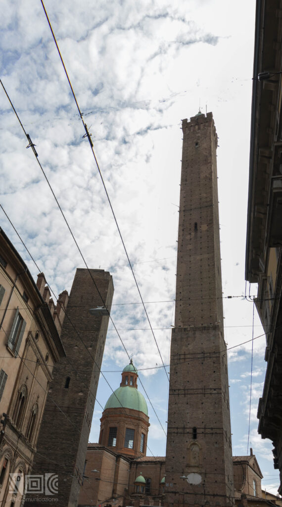
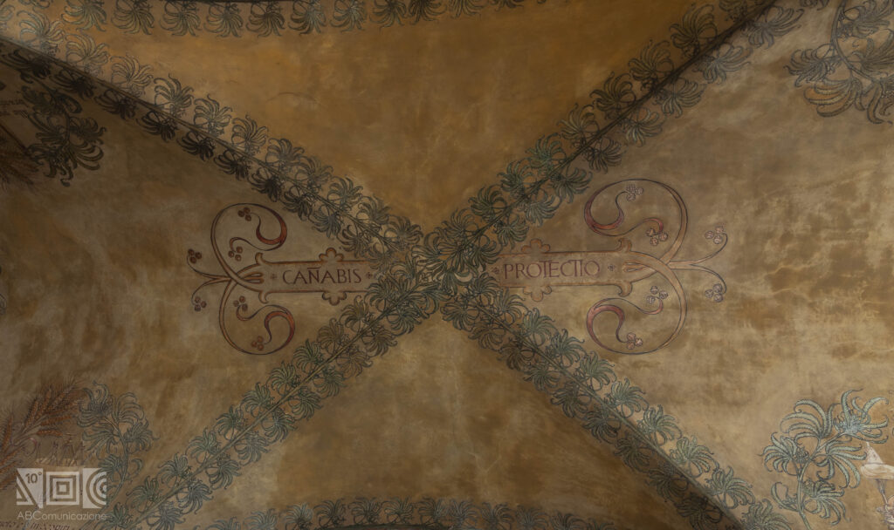
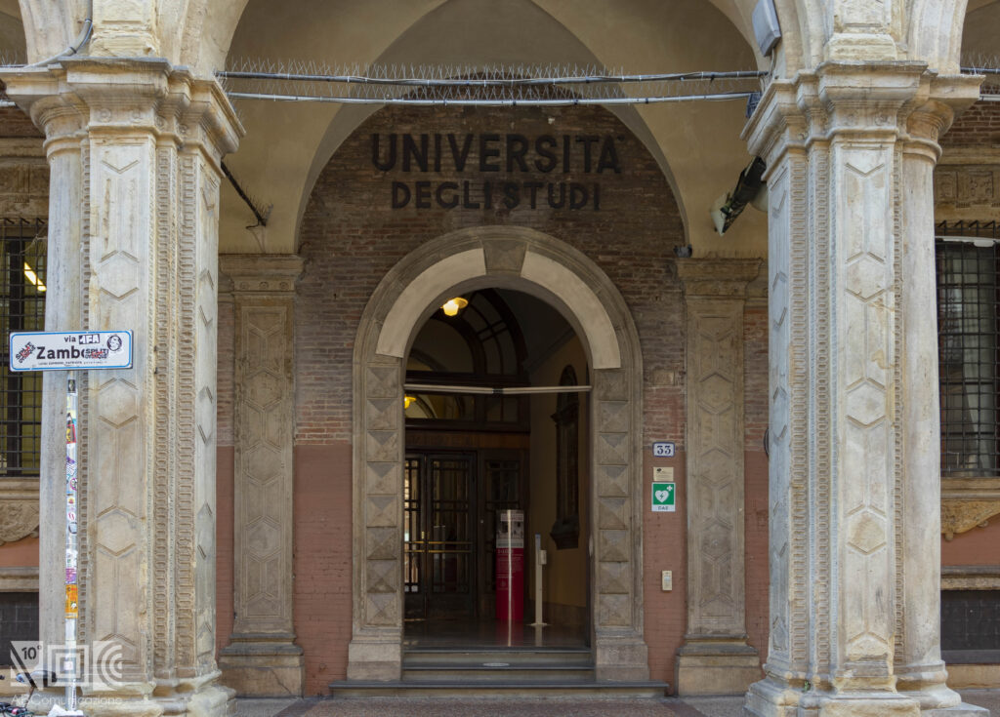
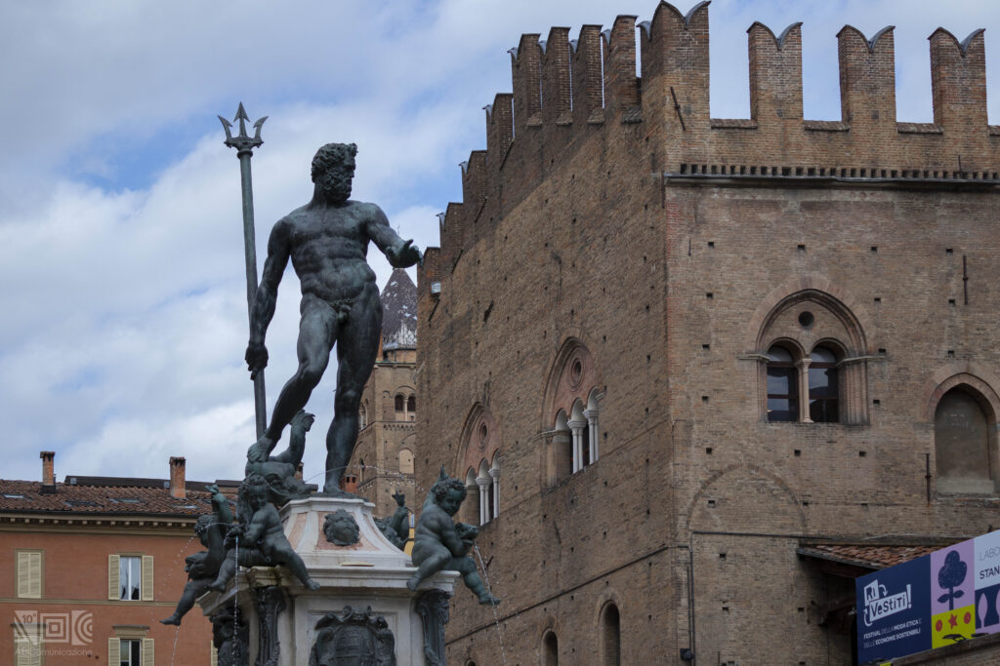

A Journey Through History, Culture & Innovation
A Journey Through the Seven Secrets of Bologna
The Seven Secrets of Bologna are a fascinating attraction you cannot miss that makes this city unique.
In this article you will find a guide through the Seven Secrets of Bologna: little Venice, an unusual telephone, the three arrows on the ceiling, the broken vase on top of the Asinelli Tower, a particular inscription, the oldest desk in Bologna and the finger of the statue of Neptune. Let’s find it out!
In St. Piella, in the heart of Bologna, there is a small window through which you can admire a unique view: Little Venice, overlooking the Moline canal (dating back to the XII century, 1100 a.d.), a small stream that winds through the picturesque houses of the street.
Few people know that, in the past, Bologna was a city crossed by a lot of watercourses used for merchant shipping.
Little Venice is one of the most romantic spots in the city: the hearts drawn on the window, the locks and love phrases written on the wall make this place a perfect spot for lovers!

Under the so-called Voltone del Podestà, in Piazza Maggiore, it is no wonder to find people whispering, facing the four corners of the Torre dell’Arengo: it is the oldest “wireless phone”, another one of the Seven Secrets of Bologna.
In the past, this place was used for hangings (looking up you can still see the original beams) visible also from Piazza Maggiore. Later on, the Voltone del Podestà became a channel of communication, thanks to which the sick of plague and leprosy could confess without infecting the priests.

In fact, the Palazzo del Podestà has a very peculiar architectural structure, thanks to which, positioning yourself in opposite corners, you can hear clearly what it is said from the other side. Its cross vault allows the sound to propagate from one side to the other. Seeing is believing!
In the heart of Piazza Maggiore you can not fail to notice the majesty of the Basilica of San Petronio, the distinctive symbol of Bologna. In addition, a few steps from this, there is also the area of the Quadrilatero: a set of streets with shops, fish shops and taverns where you can taste the typical cuisine of Bologna, such as egg pasta from the sfogline!
At the entrance of Corte Isolani, in Strada Maggiore, you can discover another one of the Seven Secrets of Bologna: the three arrows stuck in the ceiling of the portico.
Legend says that some murderers, willing to kill a young man, were distracted by a naked woman at the window, making them miss their shot. Their attack failed, but the three arrows are still in the wood today and they have become a fun curiosity.
The truth is that, thanks to Alfonso Rubbiani and Guido Zucchini (historians and restorers), the three arrows were set in the ceiling as a joke during the restoration of the house. They are made of cane and cardboard.

A stone’s throw from Corte Isolani, there is Piazza Santo Stefano: come with us to discover the stories and legends behind the Complex of the Seven Churches. This, also known as the Basilica of Santo Stefano, preserves inside the Crypt of Santo Stefano. A magical place full of history!
Located at the bottom of St. Rizzoli, crossing St. Zamboni and Strada Maggiore, the Asinelli Tower is one of the symbolic monuments of Bologna. After a strenuous climb to the top, besides the breathtaking view, you can find another one of the Seven Secrets of Bologna: the broken vase.
The ceramic vase would represent the qualities of the citizens of Bologna in resolving conflicts peacefully, but its existence is related to a mystery. It is a secret within a secret: in fact, it is not known why or how long this vase has been placed there and not even if it is really there!
It has become a real challenge to find the broken vase, but even if your hunt fails, you can always admire the incredible view over the whole city.
For the most superstitious ones, it should be remembered that the legend advises students not to go up, because it could extend their graduation time or even prevent it.

Do you want to discover more curiosities about the Asinelli Tower? Do not miss the article Myths and curiosities of the two towers of Bologna: Garisenda and Asinelli.
Walking through the porticoes of Bologna, at the beginning of St. Indipendenza, you can find another one of the Seven Secrets of Bologna. The inscription says Panis vita, canabis protectio, vinum laetitia, literally “bread is life, cannabis is protection, wine is joy”.
Lots of assumptions have been made about the actual meaning of this sentence, there are those who say that it refers to the healing effects of cannabis or its psychotropic effects. However, the hypothesis that seems more correct is that this writing is connected to the flourishing hemp trade that took place in Bologna in the past; protection should be understood in the sense of the economic benefit gained by the city.
Also in Via Indipendenza, you can not miss the magnificent Saint Peter’s Cathedral: do not miss it and go discover its history!

Another one of the Seven Secrets of Bologna is the inscription located at Palazzo Poggi, in St. Zamboni 33.
On one of the desks of the headquarters of the University of Bologna you can find the inscription “Panum resis”, which means that culture is at the basis of everything.

This phrase fits perfectly with the spirit of Bologna: in fact, the Alma Mater Studiorum is the oldest University in the world, it has always been a symbol of excellence, to the point of earning the city the name “La Dotta” (literally “The Duct”).
The Fountain of Neptune (called in dialect “al Żigànt”, or the giant) is located in Piazza del Nettuno just behind Piazza Maggiore and it is the last one of the Seven Secrets of Bologna.
The statue of Neptune was built in 1565 a.d. and it hides an optical effect created by the Flemish sculptor Jean de Boulogne (also known as Giambologna) to circumvent the limits imposed by the Church in the representation of nudity.

In fact, if you look at the statue of Neptune from a specific angle (near the staircase in front of Salaborsa there is a darker tile called the Stone of Shame), Neptune’s finger gives the impression of being on erection.
It is no wonder to find many tourists in Piazza del Nettuno looking at the statue from the strangest angles: they are admiring one of the Seven Secrets of Bologna! If you want to know more, do not miss the article One more reason to visit Bologna: the fountain of Neptune.
Our user-friendly interface allows you to seamlessly navigate between articles and visualize their locations on an interactive map, while our commitment to editorial excellence ensures that every piece is engaging, informative, and accurate. The Discovering Bologna team has meticulously crafted every typographic detail, from font families and sizes to colors, margins, aspect ratios, and captivating images with captivating captions, to truly reflect the graphic theme and ambiance of this captivating city.
Join us on this digital adventure and explore the wonders of Bologna like never before, all from the comfort of your own home. Discovering Bologna: Unraveling the secrets of the city, one story at a time.